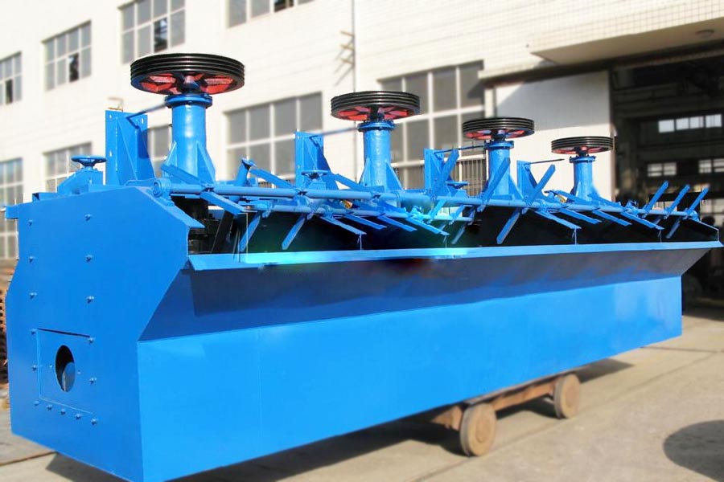
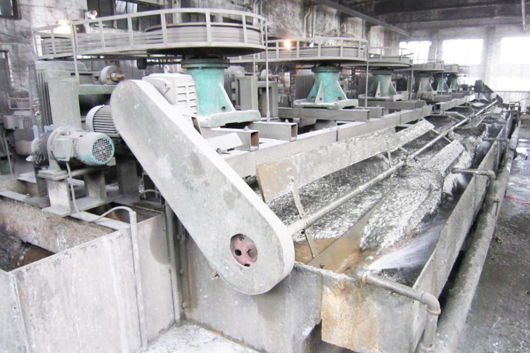

- Home >
- benefication plant >
- Gold Ore Processing Plant

Construction waste crushing production line

Mobile construction waste crushing station for urban construction waste crushing.
Gold Ore Processing Plant
Gold Ore Processing Plant introduced
Flotation machine is referred to as the floating concentrator, machinery and equipment for the flotation process in the flotation machine, the pulp is added after the pharmaceutical treatment, by stirring inflatable, make certain mineral lands where grain selectively fixed in a bubble above; float to the pulp surface is scraped off the formation of foam products, and the rest is retained in the pulp, in order to achieve the purpose of separation of mineral flotation machine structure of many, the most commonly used is the mechanical flotation machine.

Gold Ore Processing Plant Applications
Gold Ore Processing Plant for sorting ferrous metals, non-metallic can also be used such as: coal fluorite, talc, and more widely used for sorting gold, silver, copper, iron, tungsten, lead, zinc, tin, molybdenum, nickel, tantalum, niobium, manganese ore, coal and other non-ferrous metals, ferrous metals and can also be used for roughing and selected non-metallic. the flotation machine works on behalf of the drive by the motor triangle rotating impeller driven centrifugal effect to form a negative pressure, on the one hand inhalation of sufficient air is mixed with the slurry, while stirring the pulp is mixed with the drug, while refined foam, so that mineral adhesive foam on top, float to the surface and then form slurry bubble mineralization. ram height adjustment, control solution surface, so that bubble is a useful scraper scraped off the company flotation machine has the following characteristics: inspiratory capacity flotation machine, flotation machine cheap, low-power flotation machine each slot both suction, suction slurry. and flotation triple features, since flotation circuit, without any auxiliary equipment, the level of configuration, ease of process changes.
Gold Ore Processing Plant technical parameters
| Model | Tank volume(m3) | Inspiratory volume(m3/m2.point) | Motor Power(KW) | Production capacity(m3/point) | Single Weight (kg) |
| BF0.15 | 0.15 | 1.0-1.10 | 1.5 | 0.06-0.16 | 280 |
| BF0.25 | 0.25 | 1.0-1.10 | 1.5 | 0.12-0.28 | 386 |
| BF0.37 | 0.37 | 1.0-1.10 | 4.5 | 0.2-0.4 | 482 |
| BF0.65 | 0.65 | 1.0-1.10 | 3.0 | 0.3-0.7 | 940 |
| BF1.2 | 1.2 | 1.10-1.20 | 4.0,5.5 | 0.6-1.2 | 1392 |
| BF2.0 | 2.0 | 1.10-1.20 | 7.5 | 1.0-2.0 | 1800 |
| BF2.8 | 2.8 | 1.10-1.20 | 11 | 1.4-3.0 | 2160 |

BF type flotation machine features
1. inspiratory capacity, low power consumption.
2. Each slot both suction, suction slurry and flotation Since flotation circuit, without any auxiliary equipment, the level of configuration, ease of process changes.
3. slurry tank for the next cycle, coarse-grained minerals suspended in favor of recycling.
4. pulp surface features hand control, self-control and the electronic control device, easy to adjust.
5. The closed impeller made double truncated cone, can produce a strong pulp cycle.
Leave Me A Message, Now
If you have any questions regarding equipment prices, production line configuration or other problems, you can send a message to us, we will contact you soon.